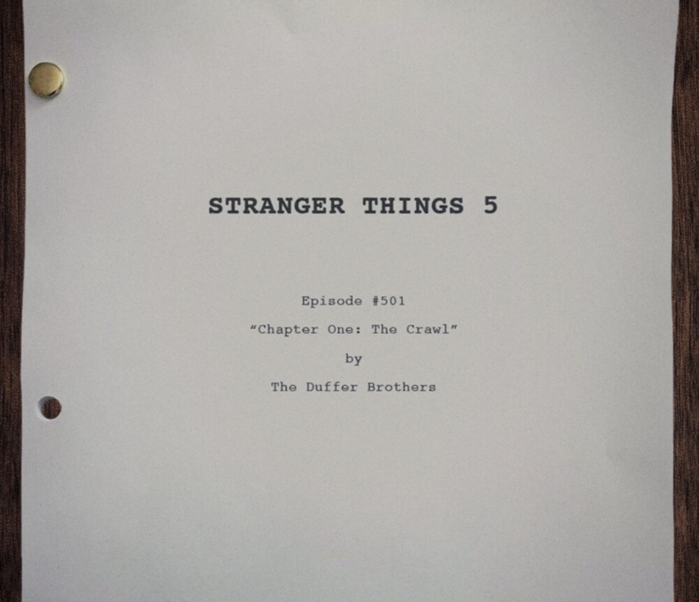

Stranger Things may not return to Netflix screens for
quite some time, but progress has already been made on
Season 5, which will serve as the show’s last.
Amid strikes and delays, it’s been a while since fans got
a solid update on the final season, so we’re rounding
up everything you need to know so far, from scripts
to casting to the setup of some scenes.
Scroll down for your definitive look into Season 5 so far,
and stay tuned as we update when new progress or
news is announced.
The Scripts & Storylines

On Stranger Things Day in 2022 (November 6), Netflix
unveiled the news that Season 5’s first installment
would be titled “Chapter One: The Crawl,” written
by series creators Matt and Ross Duffer. Additionally,
in an interview with
Variety
, it was revealed that star
Noah Schnapp, who plays Will Byers, had received three
scripts, meaning much of Season 5 had already been
completed before the since-ended
WGA strike
.